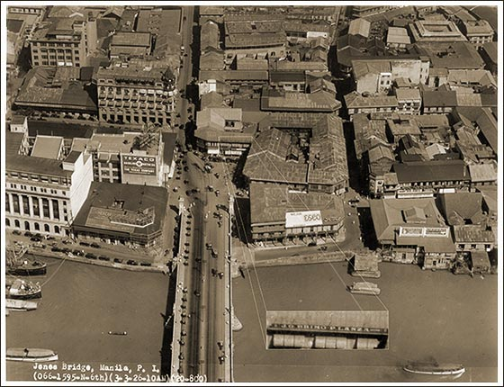

|
j
a v a s c r i p t |
Pg.2/2
March 18, 1945
Gabby's mother was lying on her bed — sick. Amidst the terrific shelling, a neighboring lady crawled under her bed — and died there — while a few inches above, Tante Marie escaped injury. In fact, she's come out of it in much better shape than before. Such was one's luck. Incidentally Gabby's shelter at tops held 32 persons while his home had at the most 70 to 80 persons. On the shooting of his partner Hirtz: "Hell, I saw him go into the house to clean his child's wound. He lit his lantern and was busy cleaning when a passing Jap saw the light, peeked in, and shot him." His words and actions suggested from a four-meter distance. "If there'd been no light there'd have been no shooting." ...ooOoo...

1926 Jones Bridge
Inset: John 'Gabby' Brimo's Office |
|
|
|
|